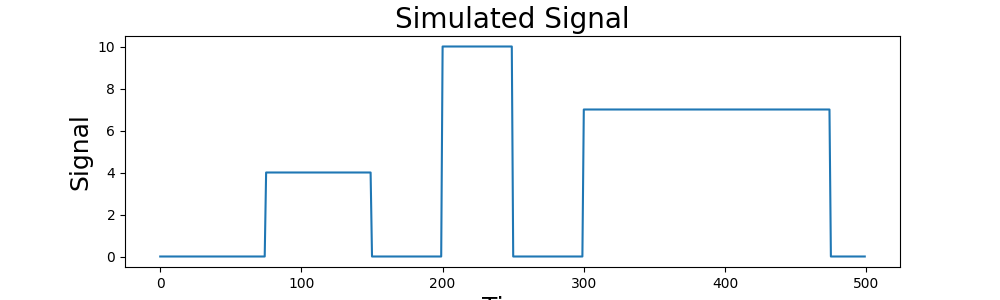
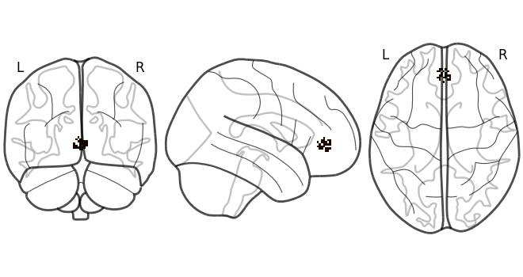
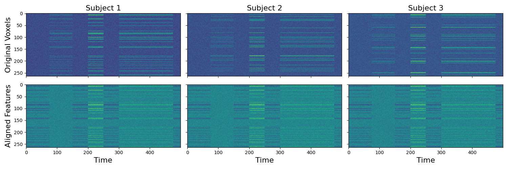
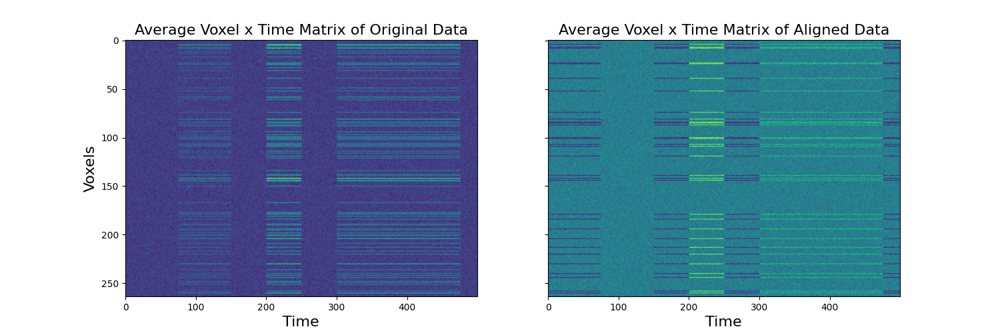

Note
Go to the end to download the full example code
Functional Alignment¶
When performing any type of group analysis, we assume that each voxel is reflecting the same computations across all participants. This assumption is unlikely to be true. Several standard preprocessing steps assist in improving ‘anatomical alignment’. We spatially normalize to a common anatomical template and we also apply spatial smoothing to improve signal to noise ratios in a target voxel by averaging activity in surrounding voxels with a gaussian kernel. However, these techniques are limited when learning multivariate models, where voxel alignment across participants is critical to making accurate inference. There have been several developments in improving ‘functional alignment’. Jim Haxby’s group has pioneered hyperalignment, which uses an iterative procrustes transform to scale, rotate, and reflect voxel time series so that they are in the same functional space across participants. They have found that this technique can dramatically improve between subject classification accuracy particularly in ventral temporal cortex. This technique is implemented in the PyMVPA toolbox. Another promising functional alignment technique known as the Shared Response Model was developed at Princeton to improve intersubject-connectivity analyses and is implemented in the brainiak toolbox. They also have found that this technique can improve between subject analyses. This method has several additional interesting properties such as the ability to learn a lower dimensional common representational space and also a probabilistic implementation. In this tutorial we demonstrate how to perform functional alignment using both hyperalignment and the shared response model using nltools.
Simulate Data¶
First, let’s simulate some data to align. Here we will simulate 3 subjects with 100 data points. Each subject has signal in 30% of the voxels in the MPFC with noise.
import numpy as np
from nltools.mask import create_sphere
from nltools.data import Brain_Data
import matplotlib.pyplot as plt
from nilearn.plotting import plot_glass_brain
n_observations = 500
p = .3
sigma = 1
n_sub = 3
y = np.zeros(n_observations)
y[np.arange(75,150)] = 4
y[np.arange(200,250)] = 10
y[np.arange(300,475)] = 7
def simulate_data(n_observations, y, p, sigma, mask):
''' Simulate Brain Data
Args:
n_observations: (int) number of data points
y: (array) one dimensional array of signal
p: (float) probability of signal in voxels
sigma: (float) amount of gaussian noise to add
Returns:
data: (list) of Brain_Data objects
'''
dat = Brain_Data(mask).apply_mask(mask)
new_data = np.zeros((dat.shape()[0], n_observations))
for i in np.where(dat.data==1)[0]:
if np.random.randint(0,high=10) < p:
new_data[i,:] = y
noise = np.random.randn(new_data.shape[0],n_observations)*sigma
dat.data = (new_data+noise).T
return dat
mask = create_sphere([0, 45, 0], radius=8)
data = [simulate_data(n_observations, y, p, sigma, mask) for x in range(n_sub)]
plt.figure(figsize=(10,3))
plt.plot(y)
plt.title('Simulated Signal', fontsize=20)
plt.xlabel('Time', fontsize=18)
plt.ylabel('Signal', fontsize=18)
plot_glass_brain(data[0].mean().to_nifti())
- 
- 
/usr/share/miniconda3/envs/test/lib/python3.8/site-packages/nilearn/maskers/nifti_masker.py:108: UserWarning: imgs are being resampled to the mask_img resolution. This process is memory intensive. You might want to provide a target_affine that is equal to the affine of the imgs or resample the mask beforehand to save memory and computation time.
warnings.warn(
/usr/share/miniconda3/envs/test/lib/python3.8/site-packages/nilearn/image/resampling.py:291: UserWarning: Resampling binary images with continuous or linear interpolation. This might lead to unexpected results. You might consider using nearest interpolation instead.
warnings.warn(
<nilearn.plotting.displays._projectors.OrthoProjector object at 0x7f37744e4a60>
Hyperalign Data¶
We will now align voxels with the same signal across participants. We will start using hyperalignment with the procrustes transform. The align function takes a list of Brain_Data objects (or numpy matrices) and aligns voxels based on similar responses over time. The function outputs a dictionary with keys for a list of the transformed data, corresponding transofmration matrices and scaling terms. In addition it returns the “common model” in which all subjects are projected. The disparity values correspond to the multivariate distance of the subject to the common space.
from nltools.stats import align
out = align(data, method='procrustes')
print(out.keys())
dict_keys(['transformed', 'common_model', 'transformation_matrix', 'disparity', 'scale', 'isc'])
Plot Transformed Data¶
To make it more clear what it is happening we plot the voxel by time matrices separately for each subject. It is clear that there is a consistent signal across voxels, but that the signal is distributed across ‘different’ voxels. The transformed data shows the voxels for each subject aligned to the common space. This now permits inferences across the voxels. As an example, we plot the matrices of the original compared to the aligned data across subjects.
f,a = plt.subplots(nrows=2, ncols=3, figsize=(15,5), sharex=True, sharey=True)
[a[0,i].imshow(x.data.T, aspect='auto') for i,x in enumerate(data)]
[a[1,i].imshow(x.data.T, aspect='auto') for i,x in enumerate(out['transformed'])]
a[0,0].set_ylabel('Original Voxels', fontsize=16)
a[1,0].set_ylabel('Aligned Features', fontsize=16)
[a[1,x].set_xlabel('Time', fontsize=16) for x in range(3)]
[a[0,x].set_title('Subject %s' % str(x+1), fontsize=16) for x in range(3)]
plt.tight_layout()
f,a = plt.subplots(ncols=2, figsize=(15,5), sharex=True, sharey=True)
a[0].imshow(np.mean(np.array([x.data.T for x in data]), axis=0), aspect='auto')
a[1].imshow(np.mean(np.array([x.data.T for x in out['transformed']]), axis=0), aspect='auto')
a[0].set_ylabel('Voxels', fontsize=16)
[a[x].set_xlabel('Time', fontsize=16) for x in range(2)]
a[0].set_title('Average Voxel x Time Matrix of Original Data', fontsize=16)
a[1].set_title('Average Voxel x Time Matrix of Aligned Data', fontsize=16)
- 
- 
Text(0.5, 1.0, 'Average Voxel x Time Matrix of Aligned Data')
Transform aligned data back into original subject space¶
The transformation matrices can be used to project each subject’s aligned data into the original subject specific voxel space. The procrustes method doesn’t look identical as there are a few processing steps that occur within the algorithm that would need to be accounted for to fully recover the original data (e.g., centering, and scaling by norm).
backprojected = [np.dot(t.data, tm.data) for t,tm, in zip(out['transformed'], out['transformation_matrix'])]
f,a = plt.subplots(nrows=3, ncols=3, figsize=(15,10), sharex=True, sharey=True)
[a[0, i].imshow(x.data.T, aspect='auto') for i, x in enumerate(data)]
[a[1, i].imshow(x.data.T, aspect='auto') for i, x in enumerate(out['transformed'])]
[a[2, i].imshow(x.T, aspect='auto') for i, x in enumerate(backprojected)]
[a[i, 0].set_ylabel(x,fontsize=16) for i, x in enumerate(['Original Voxels','Aligned Features', 'Backprojected Voxels'])]
[a[2, x].set_xlabel('Time', fontsize=16) for x in range(3)]
[a[0, x].set_title('Subject %s' % str(x+1), fontsize=16) for x in range(3)]
plt.tight_layout()
Align new subject to common model¶
We can also align a new subject to the common model without retraining the entire model. Here we individually align subject 3 to the common space learned above. We also backproject the transformed subject’s data into the original subject voxel space.
d3 = data[2]
d3_out = d3.align(out['common_model'], method='procrustes')
bp = np.dot(d3_out['transformed'].data, d3_out['transformation_matrix'].data)
f,a = plt.subplots(ncols=3, figsize=(15,5), sharex=True, sharey=True)
a[0].imshow(d3.data.T, aspect='auto')
a[1].imshow(d3_out['transformed'].data.T, aspect='auto')
a[2].imshow(bp.T, aspect='auto')
[a[i].set_title(x,fontsize=18) for i, x in enumerate(['Original Data',' Transformed_Data', 'Backprojected Data'])]
[a[x].set_xlabel('Time', fontsize=16) for x in range(2)]
a[0].set_ylabel('Voxels', fontsize=16)
plt.tight_layout()
Align subjects in lower dimensional common space¶
The shared response model allows for the possibility of aligning in a lower dimensional functional space. Here we provide an example of aligning to a 10 dimensional features space. Previous work has found that this can potentially improve generalizability of multivariate models trained on an ROI compared to using as many features as voxels. This feature is not yet implemented for procrustes transformation as dimensionality reduction would need to happen either before or after alignment.
n_features = 10
out = align(data, method='probabilistic_srm', n_features=n_features)
backprojected = [np.dot(t, tm.data) for t,tm in zip(out['transformed'],out['transformation_matrix'])]
f,a = plt.subplots(nrows=3, ncols=3, figsize=(15,10), sharex=True, sharey=False)
[a[0, i].imshow(x.data.T, aspect='auto') for i, x in enumerate(data)]
[a[1, i].imshow(x.T, aspect='auto') for i, x in enumerate(out['transformed'])]
[a[2, i].imshow(x.T, aspect='auto') for i, x in enumerate(backprojected)]
[a[i, 0].set_ylabel(x, fontsize=16) for i, x in enumerate(['Original Voxels','Aligned Features', 'Backprojected Voxels'])]
[a[2, x].set_xlabel('Time', fontsize=16) for x in range(3)]
[a[0, x].set_title('Subject %s' % str(x+1), fontsize=16) for x in range(3)]
plt.tight_layout()
Total running time of the script: (0 minutes 11.430 seconds)